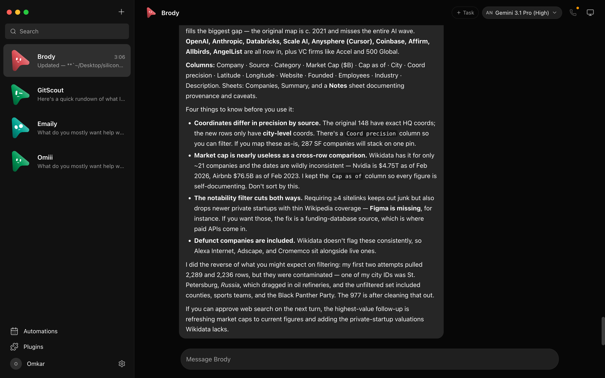

OpenMausBot
A chat app where every contact is an AI bot with its own computer and apps - the open-source alternative to Grok Bot.
Gives you a team of AI bots in a familiar chat interface, each with its own computer and app connections, that ask permission before doing anything risky.

How does it work?
You want AI agents to handle tasks (inbox sweeps, competitor watches, code reviews) but don't want to give them free rein on your machine.
Send a message to a bot in the chat interface, or set a schedule, a webhook (an automatic trigger from another app), or an app-event trigger.
A task in plain language, like 'Sweep my inbox and draft replies to anything from clients.'
The bot works in its own isolated computer and asks permission before risky actions.
- The bot works in its own isolated computer (a cloud desktop, a local virtual machine, or your host)
- When it needs to do something risky (run a shell command, edit a file), it shows an Allow/Deny card
- It can connect to Gmail, Slack, GitHub, Notion, and hundreds of other apps
The task done, with a full transcript and approval cards for everything risky.
- Completed tasks with a transcriptA weekly competitor watch that runs on schedule and posts a summary to Slack
- Permission cards for risky actionsBefore sending an email or running a command, the bot shows Allow/Deny - you decide
What changes for me?
Without it
- You run AI tasks in separate terminal windows with no approval step before risky actions
- Each agent has its own interface - switching between Claude, Codex, and Grok means switching apps
With it
- One chat app, multiple agents, each with approval cards before risky actions
- Schedule recurring tasks (weekly reports, inbox sweeps) and get results in chat
How hard is it to try?
Effort
- Download the desktop app for Mac, Windows, or Ubuntu
- During onboarding, it detects your installed agent CLIs (Claude Code, Codex, Grok)
- Send a message to a bot and try a simple task like 'Summarize the last 5 emails in my inbox'
What it takes on your computer
- Space on disk
- no data found (Electron app with bundled dependencies)
- Memory while it runs
- no data found (runs a local server on port 8799)
- Runs on
- macOS (Apple Silicon and Intel, signed .dmg), Windows (x64, unsigned installer), Ubuntu 24.04 (beta, .deb or AppImage). Node 24+ for building from source.
Paste this into Claude Code. It runs your safety scan first, then a 10-minute test.
/skillspector https://github.com/milind-soni/OpenMausBot Then: Download the desktop app from GitHub Releases, let onboarding detect your agents, and try a simple task. 10 minutes.
Should I?
Great if you...
- Anyone who wants one chat app to manage multiple AI agents with built-in permission controls
- People who already pay for AI coding agents and want a visual interface instead of terminals
- Non-technical users who want to schedule recurring AI tasks without writing code
Skip it if...
- You're comfortable in the terminal - OpenMausBot adds a GUI layer you may not need
- You want a polished product today - it's self-described as early with rough edges
- You're on Ubuntu with Wayland - host control is disabled on that setup
Is it safe?
- Security advisories: 0GitHub's advisory list, checked Nov 6
- Searches for CVEs, vulnerabilities, malware and scams0 results read, including the national CVE database: nothing found
- Are the stars earned?14.3K stars, 196 contributors, 8.6K commits
Watch out for
- Early stage. Self-described as 'Early but real' with rough edges expected.
- Windows installer is unsigned. SmartScreen will show a warning on install - you'll need to click 'Run anyway.'
- Ubuntu is beta. Host control is disabled on Wayland (the default display system on newer Ubuntu).
- API keys stored in plain text in
config.json(with restricted file permissions on Mac and Linux, but readable on Windows).
Who's using it, and for what?
The project is 87 days old and describes itself as 'Early but real.' No published case studies or independent user reports found.
We couldn't find anyone describing real use of it yet. That's normal for a brand-new repo, and it's worth knowing.
Who's talking about it
- GitHub TrendingTrending (daily)
- TrendshiftTrending on Trendshift
- BitdozeBest Open Source Grok Bot Alternatives
- chatgate.aiOpenMausBot review
Sources
- OpenMausBot GitHub, Nov 6
- Bitdoze - Best Open Source Grok Bot Alternatives, Oct undefined
- chatgate.ai - OpenMausBot review, Oct undefined